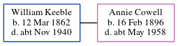

William George Keeble 1862 - c1940
[ Home ] | [ Calendar ] | [ Surnames Index ] | [ Census Index ] | [ Family History ]An incapacitated, William Keeble, the husband of Annie Emily Cowell (the second cousin twice-removed on the mother's side of Nigel Horne), was born on Mar 12, 18621,2. He married Annie at St Mary the Virgin Church, Nonington, Kent, England on Jan 10, 19233. On Sep 29, 1939, he was living at 1 The Huts, Snowdown, Kent1.
He died c. Nov 1940 in Eastry, Kent, England2.
Citations
- 1939 Register - Findmypast (was the head of the household)
- England & Wales deaths 1837-2007 - Findmypast
- England & Wales Marriages 1837-2005 - Findmypast
Media
Kent, Canterbury Archdeaconry Marriages Transcription - GBPRS-CANT-M-97044861-2
1939 Register Transcription - TNA-R39-1821-1821G-002-04
England & Wales deaths 1837-2007 - BMD/D/1940/4/AZ/000609/001
England & Wales marriages 1837-2005 - BMD/M/1923/1/AZ/000487/062
Kent, Canterbury Archdeaconry marriages - GBPRS/CANT/M/97044861/1
Family Tree
Generated by ged2site. Last updated on Jun 11, 2024